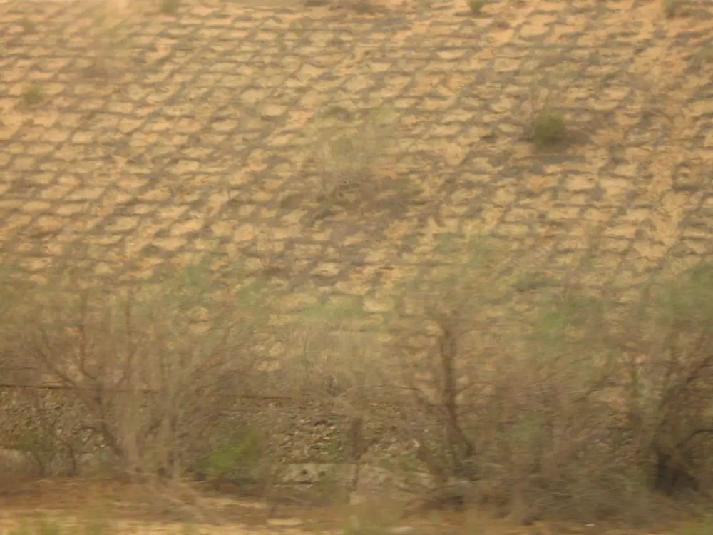
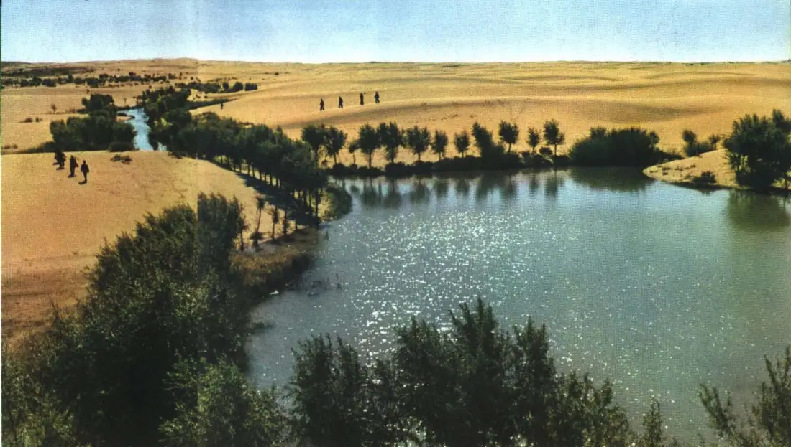
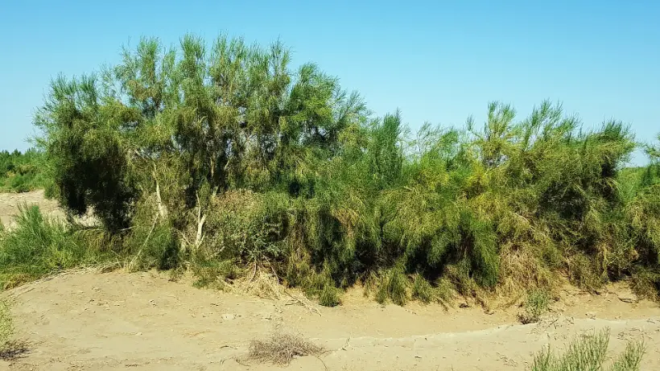
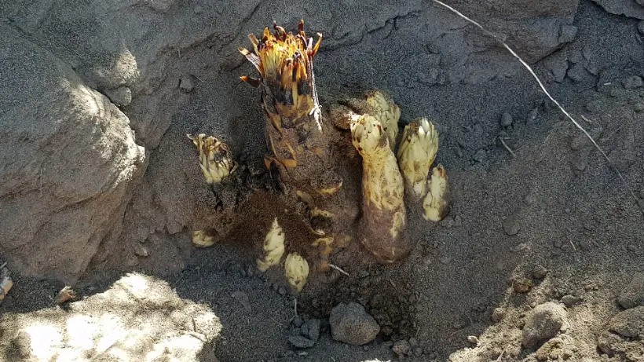
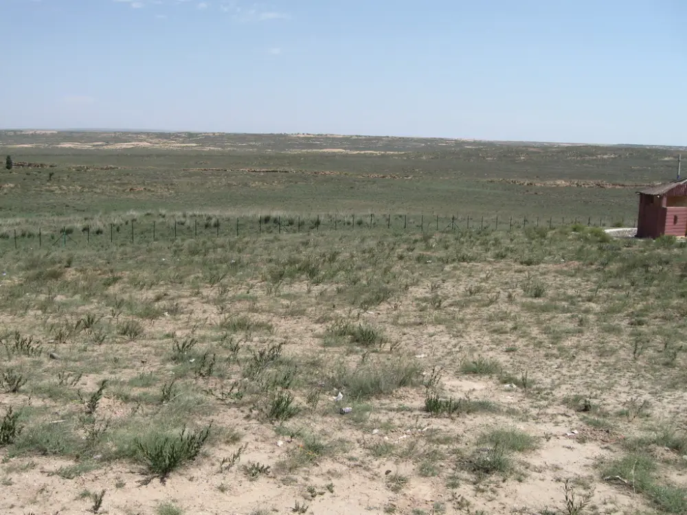
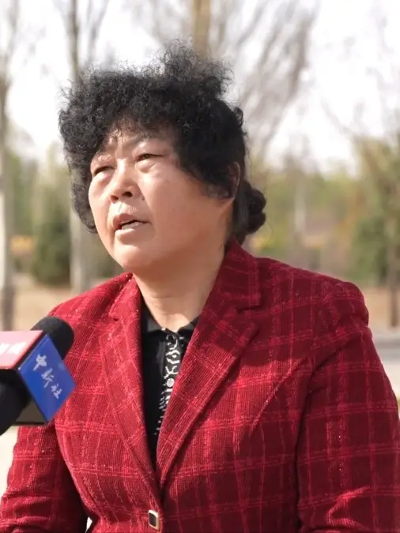
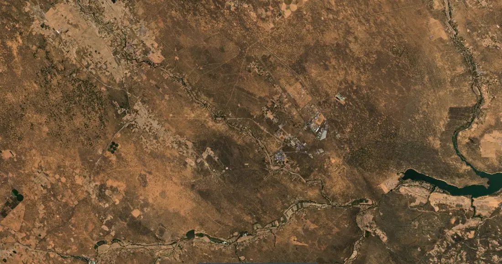
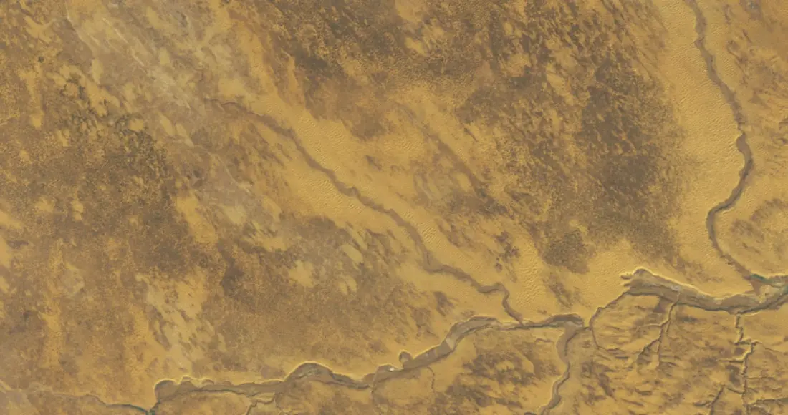
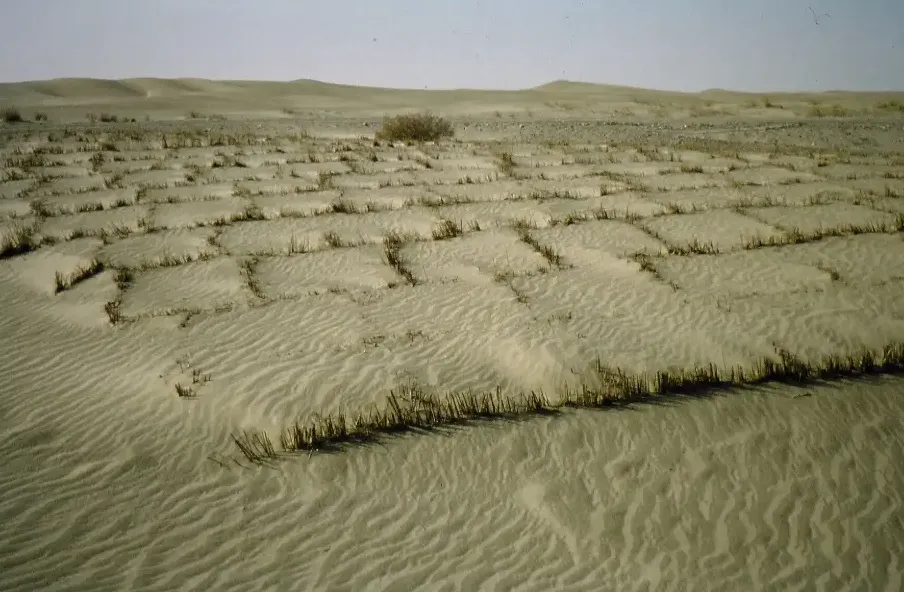

治沙人物故事辑录
沙漠不说话。它只是往前走，一年四五米，把墙根埋掉，把门槛埋掉。
与它相对的人也不说话。他们扎草方格，背树苗，挖渠，扶起被风吹倒的第一千棵树，然后回到起点，扶起第一千零一棵。
他们当中有科学家，有农民，有林场场长，有把嫁妆换成一棵树的女人；有几个人一辈子做的事，只是让一片沙地上多活下来几成树苗。他们没有一个是独自完成这件事的——每一份被报道的功绩背后，都站着几十个、几百个从未被写进报道的人。
我们尝试用文学记录他们的姿态，用资料记住他们做过的事。
向沙漠进军的人
中国科学院沙坡头沙漠研究试验站科研团队 宁夏中卫 · 腾格里沙漠东南缘
火车要在沙海里走四十多公里。走不过去，西北就少一条动脉；走得过去，中国人就得先教会沙子停住。——1955 年，包兰铁路沙害治理的时代难题
1955 年，竺可桢带着李鸣冈等一批科学家来到沙坡头。他们面对的是一个没有现成答案的问题：包兰铁路要六次穿越腾格里沙漠，沙害路段总长四十余公里，而铁路沙害防治在国际上没有成功的先例可以借鉴。
于是他们开始试。试麦草，试沙障，试“以固为主、固阻结合”，试植物在怎样的水分条件下才活得下来。沙坡头后来成为我国第一个沙漠综合治理研究站，也成了“草方格沙障”这项技术的诞生地——把麦草一束束扎进沙里，围成一米见方的格子，风便被切成碎片，沙子停在了格子里。
风从西北来，年复一年，被无数个一米见方的格子拆散。
格子没有名字。扎格子的人，大多也没有留下名字。
这套方法后来被介绍到国外，被称作“中国魔方”。而比技术更值得记下的，是几代人在同一片沙地上持续六十余年的观测——正是这种漫长的、看起来毫无戏剧性的坚持，才让后来人得以区分“一年刮了几场风”和“二十年的气候趋势”。
- 1955竺可桢带领李鸣冈等科学家“向沙漠进军”，来到沙坡头，建立我国第一个沙漠综合治理研究站。
- 包兰铁路需6次穿越腾格里沙漠，沙害路段总长40余公里；铁路沙害防治当时无成功国际先例。
- 科研人员发明草方格沙障，提出“以固为主、固阻结合”的铁路沙害防治体系。沙坡头站拥有长期固定观测66年的包兰铁路人工固沙植被防护体系。
- 后期提出“水量平衡、以水定植”的固沙植被建设理论体系。

八十四只羊与一头骡子全国治沙英雄 · 全国劳动模范
石光银 · 陕西省定边县海子梁乡农民 陕西定边 · 毛乌素沙漠南缘
因为沙进人退，童年的石光银随父兄九次搬家。他看够了黄沙，也吃尽了苦头。——石光银早年经历的公开记载
1984 年初，国家鼓励个人承包治沙的政策出台。石光银和乡政府签下承包治沙三千亩的合同，成为榆林市个人承包治沙造林的第一人。
买树苗需要钱。他不顾妻子阻拦，卖掉了家里的八十四只羊和一头骡子。
三千亩荒沙栽上了树苗，成活率百分之八十七。四大壕村出现了第一片绿洲。
第二年他承包了五点八万亩荒沙。上面太阳晒，下面沙子烤，饿了啃干馍，渴了喝冷水。他带着大伙干了一个春天——然后连续刮了十一场大风。风蚀沙埋，栽下的树苗九成被毁。第三年接着干，八成树苗又毁在风沙里。
两次失败之后，他不再只凭力气。他到各处去看、去问、去学，最终带着群众在六千亩沙地上搭起了长达八百公里的沙障。到 1990 年，五点八万亩荒沙全部得到治理。
八十四只羊走出院子的时候，没有人知道它们换回来的会是什么。
几年之后，那里长出了一条百余里长、几十里宽的屏障。
后来的事，也不只是种树。他成立了全国第一个联合农户治沙的农民治沙公司，要让农户在治沙中得到实利——当初跟他一起承包的人里，六成是特困户；三十多年过去，定边县的森林覆盖率从 1980 年的百分之三点八，提高到了百分之三十三点五。沙进人退，变成了人进沙退。
- 1984初与乡政府签订承包治沙 3000 亩合同，为榆林市个人承包治沙造林第一人；卖 84 只羊、1 头骡子筹款，成活率 87%。
- 1985承包 5.8 万亩荒沙；治理 6000 亩狼窝沙时，第一年连续 11 场大风致树苗 90% 被毁，第二年再毁 80%；后在 6000 亩沙地搭设长 800 公里沙障，至 1990 年 5.8 万亩全部治理。
- 30 余年间治理荒沙、碱滩近 30 万亩，累计植树 4000 多万株（丛）。
- 定边县森林覆盖率由 1980 年的 3.8% 提高到 33.5%。

一头毛驴，一辆架子车
八步沙“六老汉”与三代治沙人 甘肃古浪 · 腾格里沙漠南缘
一夜北风沙骑墙，早上起来驴上房。——八步沙当地村民形容风沙的老话
古浪县境内沙漠化土地面积达二百三十九点八万亩，风沙线长一百三十二公里。八步沙在县境东北，是腾格里沙漠南缘的一道风口。当地人说，沙子一年往西南方向移动四五米，一千亩土地里，五百亩被黄沙埋掉。
1981 年，在政府倡导下，年过半百的六位土门镇村民——石满、郭朝明、贺发林、罗元奎、程海、张润源——以联户承包的方式组建集体林场，进驻沙漠。一头毛驴，一辆架子车，一个大水桶，几把铁锨。为了看护辛苦种下的林子，他们吃住都在八步沙。巡沙时烧一壶开水，啃馒头，拌炒面粉，就这样坚持下来。
后来四位老人相继离世，在世的两位也年事已高。他们把治沙的担子交给了儿子。
1983 年，三十一岁的郭万刚原本在土门镇供销社上班。父亲郭朝明生病后，让他辞了工作到八步沙种树。他一开始不愿意，老人也气哼哼地不高兴，他拗不过，才来的。这一来，就干了三十六年。
他后来说，坚持了五六年以后，望着年年长大的树，就舍不得走了。
——许多人的一生，就是这样被几棵树留住的。
2003 年，七点五万亩的八步沙根治完成。他们又主动请缨，向腾格里沙漠风沙危害最严重的黑岗沙、大槽沙、漠迷沙三大风沙口进发，完成治沙造林六点四万亩，封沙育林十一点四万亩。2015 年，又承包了麻黄塘治理任务，管护面积十五点七万亩。
再后来，第三代人加入了。郭万刚的儿子郭玺在沙漠里种梭梭，嫁接肉苁蓉——沙固住了，风也吹不走了，到了五六月，还开花，“特别好看”。昔日的八步沙，成了当地人口中的“绿色银行”。
- 古浪县境内沙漠化土地面积 239.8 万亩，风沙线长 132 公里；八步沙位于腾格里沙漠南缘。
- 1981 年，石满、郭朝明、贺发林、罗元奎、程海、张润源六人以联户承包方式组建集体林场。
- 1983 年郭万刚（时年 31 岁）辞去土门镇供销社工作进入八步沙，后任林场场长；至报道时已在此 36 年。
- 2003 年 7.5 万亩八步沙根治完成；此后完成治沙造林 6.4 万亩、封沙育林 11.4 万亩；2015 年承包麻黄塘，管护 15.7 万亩。
- 2016 年形成“公司+基地+农户”经营模式，发展梭梭嫁接肉苁蓉等沙产业。第三代治沙人郭玺为郭万刚之子。


跳进决口的那个人治沙英雄 · 人民楷模
王有德 · 宁夏灵武白芨滩林场场长 宁夏灵武 · 毛乌素沙地边缘
白芨滩的今天，是王有德他们用汗水就着沙漠苦出来的！——灵武当地人的说法
1985 年 3 月，三十岁的王有德被任命为白芨滩林场副场长。这座 1953 年建场的公益型林场，到八十年代已多年徘徊不前：职工一年有七个月无事可做，年收入只有几百元，三分之一的人要求调走。
他挨个走进职工家里。建场三十多年了，工人们还住着能望见天的土坯房，饭菜缺油少菜，有的家庭连电都用不起。
那年他推了一系列改革：压缩非生产人员，取消一线工人的工资级别、实行工效工资，辞退民工，把生产任务分解给职工——“让职工干自己的活，挣自己的钱”。可治沙是要花钱的：按规划每年至少需五十万元，财政拨款不到二十万。于是他组织职工在冬季和造林闲暇外出打工、跑运输，安排富余人员在城里开饭馆、搞维修。
1986 年，林场在灵武城北五百亩流动沙丘带上开发果园。离家只有三公里，王有德始终和职工住在一起，四顶帐篷里，最长的一次五十多天没有回家。白天推沙、平田、砌渠，夜里点着煤油灯安排第二天的工作。七人一组打砌渠用的水泥板，正常一天能打二百一十块；他加入后，最多的一天打了五百八十块。
1992 年初冬，大泉沙荒地开发。他每天只睡三四个小时，晚上脚肿得连鞋都脱不掉。
一天下午，主渠决口，二十多米长的口子被撕开。
他赶到现场，对愣住的工人喊了一句，夹起两捆麦草跳进冰冷的水里。工人们随后也都跳了下去。他本来有关节炎，加上脚疼没力，一次次跌倒在水中；工人求他上去，他坚持不肯，直到决口被堵住。
那年冬天他累垮了，被职工强行送进医院。出院的消息一传开，工人们赶到医院，流着泪劝他好好检查，他也流下泪来，说，你们的情我一辈子也忘不掉。第二天，他又出现在工地上。
二十年间，他和职工完成治沙造林八万亩，是过去三十二年的两倍；林场固定资产从四十万元增至一千四百万元，职工平均收入是 1985 年的九倍多。白芨滩后来被国内外治沙专家誉为世界综合治理沙漠的典范。
- 白芨滩林场建于 1953 年，属防风固沙、改善生态环境的公益型林场；1985 年 3 月王有德（时年 30 岁）任副场长，1993 年任场长。
- 至 2005 年报道时，20 年完成治沙造林 8 万亩（为过去 32 年的 2 倍），在宁夏黄河平原筑起 420 平方公里绿色屏障。
- 固定资产由 40 万元增至 1400 万元；职工平均收入接近 1 万元，为 1985 年的 9 倍多。
- 1986 年开发 500 亩流动沙丘果园期间，最长一次 50 余天未回家；1992 年冬主渠决口，他夹麦草跳入水中堵口，当年冬累垮住院。
- 2002 年底当选第十届全国人大代表。相关荣誉称号另见国家林业和草原局、自然资源部等公开报道（“人民楷模”称号见《中国绿色时报》2026 年报道）。

宁可种树累死
殷玉珍 · 内蒙古乌审旗萨拉乌苏村农民 内蒙古乌审旗 · 毛乌素沙地腹地 · 井背塘
宁可种树累死，也不能让沙子欺负死。——1985 年，殷玉珍嫁到井背塘后立下的誓言
1985 年，殷玉珍嫁到内蒙古乌审旗萨拉乌苏村一个叫井背塘的地方。那里在毛乌素沙地腹地，黄沙能埋掉房子。
在那样的绝境里，她立下了那句话。此后四十余年，她和丈夫白万祥人背肩扛，经历了无数次“种了埋、埋了种”的失败，累计治沙七万余亩，让昔日寸草不生的沙海变成了绿洲。
种一棵树，埋在沙里；再种一棵，再埋。
四十多年里，“失败”这个词，在她那里不是结局，只是流程的一部分。
她的故事后来被世界看见。二十多年前，一位名叫赛考斯的美国人资助她种树；多年后这位老人回到中国，亲眼看到当年的沙漠变成了一片郁郁葱葱的森林。这个故事，被讲到了国际场合。
如今，通往她家的林间公路旁，立着一块块纪念碑，刻着不同机构、单位和人员的名字。她说，谁在这里种下过一片绿，就为谁立一块碑、刻一行名。她还为来种树的人准备了小小的树牌——种下树苗，可以挂上自己的名字。
她替所有来过的人记住了名字。
而她自己的名字，早就在这片林子里了。
在她的带动下，乌审旗涌现出二百四十多户经营规模三千亩以上的造林大户。目前乌审旗境内毛乌素沙地治理面积达八百三十九点三九万亩，治理率百分之八十五，森林覆盖率提升至百分之三十二点九二。
- 1985 年殷玉珍嫁至乌审旗萨拉乌苏村井背塘（毛乌素沙地腹地）；40 余年间与丈夫白万祥累计治沙 7 万余亩。
- “宁可种树累死，也不能让沙子欺负死”为其立下的誓言（见该报道）。
- 美国友人赛考斯（本名罗纳德·萨科尔斯基）20 多年前资助其种树，后重返中国；该故事曾被讲述于对美国的国事访问场合。此为报道所述，本页仅转述，不涉及其他解读。
- 乌审旗现有经营规模 3000 亩以上造林大户 240 多户；境内毛乌素沙地治理面积 839.39 万亩，治理率 85%，森林覆盖率 32.92%（报道时数据）。



毛乌素沙地东南部的同一片地方（约北纬 38.1°、东经 109.1°），左 1985 年，右 2021 年。拖动中间的竖线对比。1985：USGS Landsat · 公有领域；2021：含 Copernicus Sentinel-2 数据 · CC BY-SA 4.0
没有留下名字的那些人
妇女治沙小组、造林大户、护林员、技术员、搬迁户，以及所有在此付出过的人 西北五省区 · 所有正在变绿与仍在退化的沙地
如果把镜头只对准最著名的那几个人，我们会漏掉绝大多数真正弯下腰的人。
1950 年代的乌审旗，荒漠化、沙化土地面积达百分之九十以上，森林覆盖率仅百分之二点六。初代治沙人宝日勒岱带领六十多名青年，把铺盖和锅碗搬进沙漠。十余年时间，他们摸索出“前挡后拉、穿靴戴帽”“锁边蚕食、逐步推进”的本土办法，锁住十万余亩流动沙丘，把乌审召镇的森林覆盖率提升到近百分之十五。
2001 年，乌审旗十三名牧区妇女每人自筹三千五百元，组建妇女治沙小组，向凶险的“红色大沙梁”宣战。先扎沙障固定流沙，再栽下沙柳、杨柴……年复一年。她们被称为“十三姐妹”。
她们筹的钱不多。三千五百元，在那个年头买不到多少树苗。
但她们筹的是自己的钱，治的是自己的沙。
还有那些连姓名都没有留下的：在八步沙吃住多年的老人，在沙坡头扎下第一方格麦草的工人，在白芨滩跳进渠里的职工，在库布其板下种菜的农牧民，在乌审旗开着北斗导航种植机的技术员，把家从山里搬到沙边的三万多搬迁人口。
史书上写不下这么多名字。但每一片活下来的林子，都是他们一同签下的名字。
- 1950 年代乌审旗荒漠化、沙化土地面积达 90% 以上，森林覆盖率仅 2.6%；宝日勒岱带领 60 多名青年治沙，10 余年锁住流动沙丘 10 万余亩，乌审召镇森林覆盖率提升至近 15%。
- 2001 年乌审旗 13 名牧区妇女每人自筹 3500 元组建妇女治沙小组，以乌云斯庆为代表，被称为“十三姐妹”。
- 沙坡头站：竺可桢、李鸣冈等于 1955 年进站；草方格沙障由科研人员在长期试验中发明。
- 八步沙近年陆续有 3 万多人从贫瘠山区搬迁至林区周边（央广网 2019 年报道）。
- 毛乌素沙地已有搭载北斗导航的开沟种植一体机进入试验验证阶段，株距误差可控制在 5 厘米以内，效率比人工提高 3 倍以上（《人民日报》2026 年报道）。

每一棵活下来的树，都记得一个人的手
这份辑录只写下了五组人。但真正让西北变绿的，是几十万、上百万个没有被记录的姓名：是第一代治沙人把铺盖搬进沙漠的那个夜晚，是妇女治沙小组每人凑出的三千五百元，是林场职工一次一次扶起被风吹倒的树苗，是护林员在无人经过的沙梁上走完的每一趟巡查，是把孩子从山里迁到沙边的每一次搬家，也是那些试了、失败了、却没有再被提起的人。
治沙这件事，从来不是某个英雄的功劳。它更像一场跨越几代人的接力：前面的人把沙固定住，后面的人才能把树种活；这一代人把水省下来，下一代人才有绿可守。任何一份被归到一个人名下的功绩，背后都是一群人共同的日子。
因此，这一页的敬意不只给写进报道的人。
但他们已经知道，风是可以被留下的。